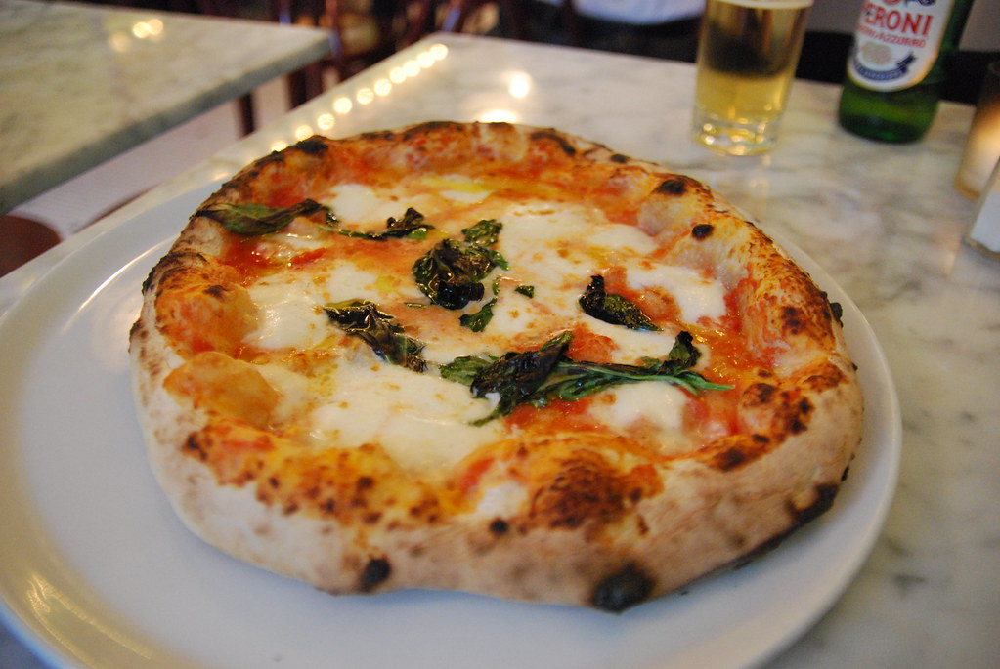

Pizza Napoletana

Credit: flickr
Description
Neapolitan pizza originated in Naples, Italy, hundreds of years ago. Why mess with a good thing? There is even an Italian non-profit organization—the True Neapolitan Pizza Association (Associazione Verace Pizza Napoletana), or AVPN—which is dedicated entirely to protecting the integrity and tradition that go into an authentic Neapolitan pizza.
Ingredients
- flour
- water
- salt
- yeast
- tomatoes
- olive oil
- mozzarella
- basil
Steps
- Make the dough: Mix flour, water, salt, and yeast together until the desired consistency is achieved. Then roll out into a disk
- Make the sauce: Crush or slice your tomatoes, simmer with olive oil, and season appropriately while remembering that the beauty of this dish is simplicity
- Assemble the pizza: Spread your sauce and space mozzarella slices evenly around the surface area
- Bake the pizza: Tradition dictates that the cooking should be done in a high-heat oven for a very short period of time. It should also be cooked exclusively in a wood-fired oven, but I won’t tell if you won’t.
- Enjoy: Garnish with fresh basil.
Home